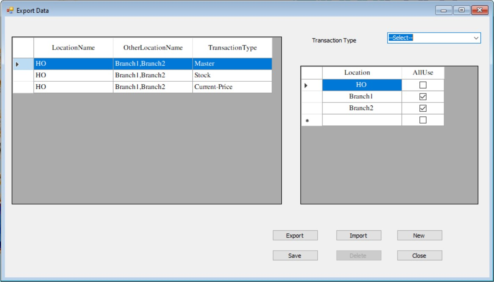
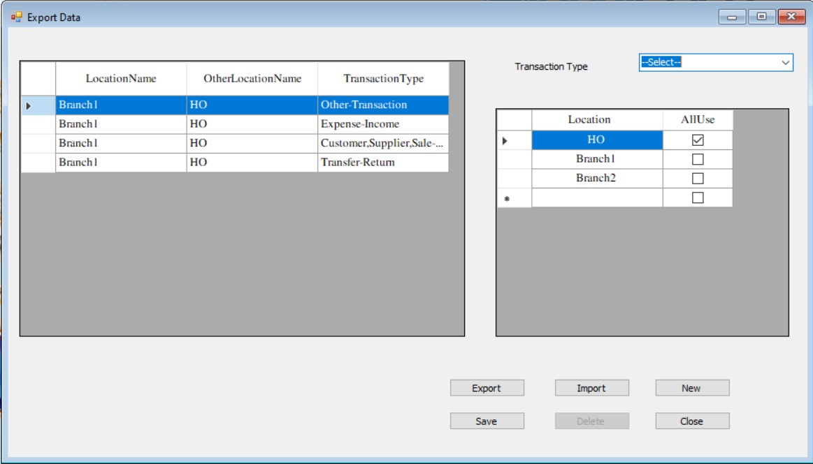
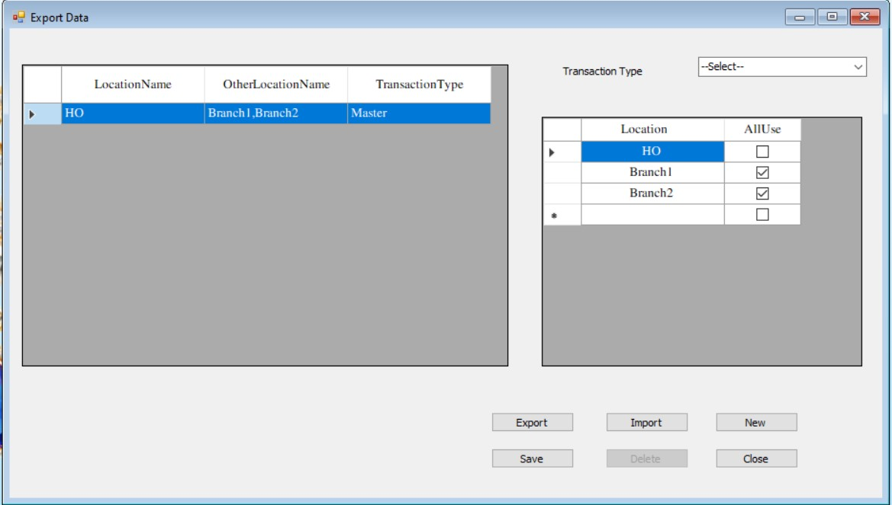
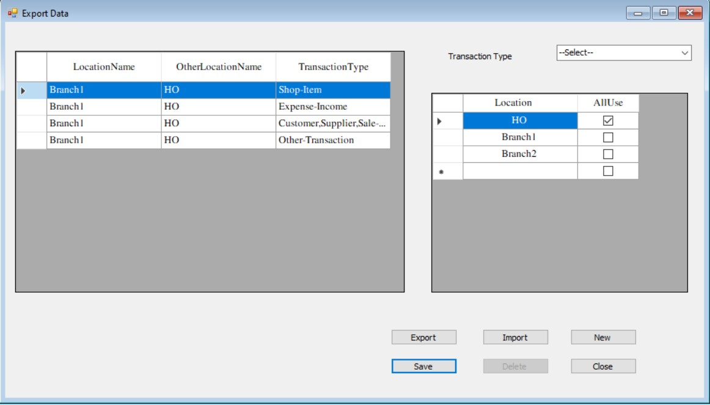

Export Data
Export Data
- GDrive အသုံးပြုရန်လိုအပ်သော Setting များကို သတ်မှတ်နိုင်သော Form ဖြစ်ပါသည်။
- GDrive အသုံးပြုရာတွင် မိမိဆိုင်၏ လိုအပ်ချက်အပေါမူတည်ပြီး နည်းလမ်းနှစ်ခု အသုံးပြုနိုင်ပါသည်။
- 1. ရုံးချုပ်တွင် ပစ္စည်းများသွင်းပြီးဆိုင်ခွဲများသို့ချကာ ဆိုင်ခွဲများရှိအရောင်းစာရင်းများကို ပြန်ကြည့်မည်။(HO to Branch Transfer)
- Global Setting တွင် HO to Branch transfer ကို အမှန်ခြစ် on ပေးထားရမည်။
- Location တွင် ရုံးချုပ်အပါအ၀◌င်ဆိုင်ခွဲများအား setup လုပ်ပေးရမည်ဖြစ်ပြီး ရုံးချုပ်အား အမှန်ခြစ် on ပေးရမည် ဖြစ်သည်။ eg: မိမိဆိုင်တွင် ရုံးချုပ်နှင့်ဆိုင်ခွဲနှစ်ဆိုင်ရှိ ပါက Figure 1 အတိုင်းပေးပို့မည့် Data များကို ရွေးချယ်ကာ သိမ်းဆည်းပေးထားရမည်ဖြစ်သည်။ရုံးချုပ်မှ ၀◌ယ်သူများအား setup လုပ်ပြီးဆိုင်ခွဲများသို့ပေးမည် ဆိုပါက Customer,Supplier,Sale Person ပါရွေးပေးရန်လိုမည်။
- ဆိုင်ခွဲအချင်းချင်း ပစ္စည်းအပြန်အလှန်ပေးပို့လိုပါက ဆိုင်ခွဲမှ ရုံးချုပ်သို့ Transfer Returnပြန်ချပြီး ရုံးချုပ်မှ ပေးလိုသောဆိုင်ခွဲသို့လွဲပေးရမည်။(Eg: Branch 1 Transfer Return To HO, HO Transfer To Branch2)


Figure 1 =>HO to Branch
- 2. ဆိုင်ခွဲများတွင် ပစ္စည်းများ၊Customer Data များ ၊ဘောင်ချာများသွင်းပြီး Transactions များ အားလုံးကို ရုံးချုပ်တွင် ပြန်ကြည့်မည်။
- Global Setting တွင် HO to Branch transfer ကို အမှန်ခြစ် Off ပေးထားရမည်။
- Location တွင် ရုံးချုပ်အပါအ၀◌င်ဆိုင်ခွဲများအား setup လုပ်ပေးရမည်ဖြစ်ပြီး ရုံးချုပ်အား အမှန်ခြစ် on ပေးရမည် ဖြစ်သည်။ eg: မိမိဆိုင်တွင် ရုံးချုပ်နှင့်ဆိုင်ခွဲနှစ်ဆိုင်ရှိ ပါက Figure 2 အတိုင်း ဆိုင် ၂ ဆိုင်လုံးကို ပေးပို့မည့် Master Data များကို ရွေးချယ်ကာ သိမ်းဆည်းပေးထားရမည်ဖြစ်သည်။ ဆိုင်ခွဲအားလုံး၏ Master Dataများသည် တူနေရန်လိုအပ်သည်။


^^Top